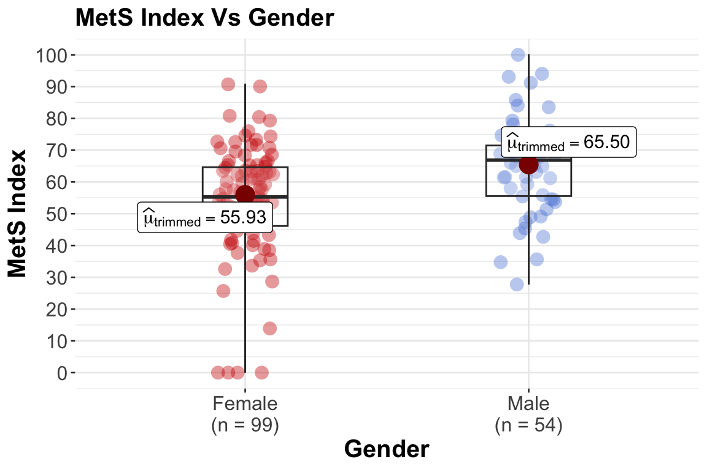
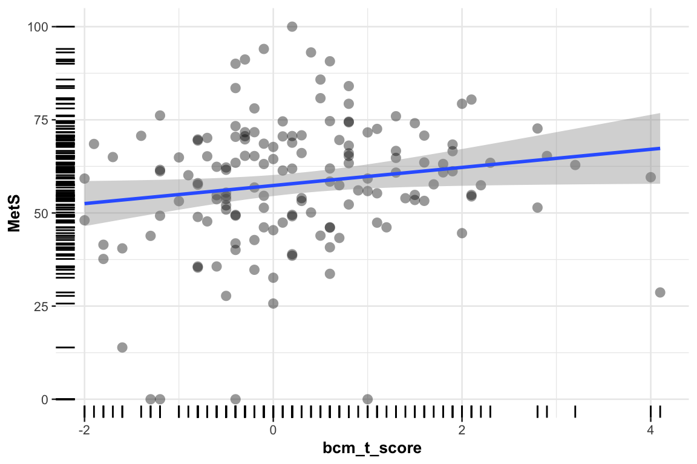
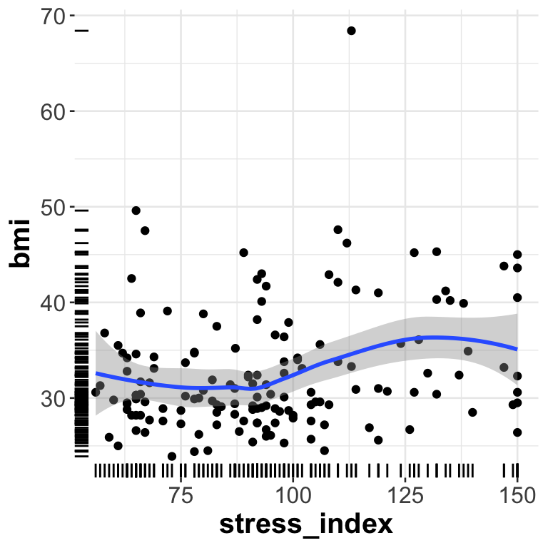

Modeling & Assessing Metabolite Added Value
1 Priority Based Modeling
Prioritizing heterogeneous data sources (demographics, clinical, omics, digital health) in building a predictive/association model for metabolic syndrome (MetS). The aim is to balance (i) clinical interpretability, (ii) cost/feasibility, and (iii) explanatory power.
üß≠ Overall logic behind the priority order
The goal is to build models that progress from broad, upstream, easily interpretable determinants of MetS to fine-grained, mechanistic, or exploratory markers.
So the ordering reflects a conceptual causal and interpretability hierarchy, not statistical performance:
From distal → proximal → mechanistic → exploratory
This mirrors how we reason biologically and clinically:
- Who is at risk? (demographics, behavior)
- What modifiable exposures or interventions exist? (diet, medication)
- What physiological manifestations are measurable in routine care? (clinical biochemistry)
- What molecular signatures explain underlying pathways? (targeted metabolites → untargeted omics)
1️⃣ Demographics
Examples: age, sex, ethnicity, socioeconomic status, education, family history
Why first:
- These are fundamental, non-modifiable determinants that shape all downstream biology and behaviors.
- They act as baseline confounders or stratifiers for almost every other dataset (e.g., age and sex affect biochemistry, metabolomics, and disease risk).
- Collected reliably, at low cost, and are always available.
- They provide context for interpreting later findings (e.g., age-related differences in metabolites).
Priority rationale:
Always start here to define baseline risk and to adjust all subsequent models.
2️⃣ Dietary indices / lifestyle factors
Examples: Healthy Eating Index, Mediterranean Diet Score, physical activity questionnaires, smoking, alcohol, sleep questionnaires
Why second:
- Represent modifiable exposures that directly influence metabolic health.
- They often precede disease onset and affect biomarkers downstream (lipids, glucose, metabolites).
- They connect public-health interventions to molecular outcomes.
- Even if self-reported, they capture long-term habits not seen in blood/metabolite snapshots.
Priority rationale:
Key upstream, modifiable factors that influence nearly every physiological pathway related to MetS.
3️⃣ Medications
Examples: antihypertensives, statins, metformin, GLP-1 agonists, etc.
Why third:
- Strongly influence downstream biochemical and metabolomic readouts.
- Represent clinical interventions that modify the phenotype of interest.
- Must be accounted for to distinguish disease biology from drug effects.
- Often act as confounders or effect modifiers in biomarker analyses.
Priority rationale:
Critical to adjust for before interpreting any biological signal — they change metabolic readouts directly.
4️⃣ Device data
Examples: objectively measured activity, step count, energy expenditure, sleep metrics, heart rate variability
Why fourth:
- Provide objective, continuous measures of lifestyle and physiology, complementing self-reported behaviors.
- Reflect real-time metabolic demand and stress, bridging behavior and physiology.
- More proximal than lifestyle but still modifiable and behavioral in nature.
- Increasingly reliable with modern wearables, but still variable across devices and populations.
Priority rationale:
Objective bridge between behavior and physiology; still upstream of biochemical consequences.
5️⃣ Clinical blood biochemistry
Examples: glucose, insulin, HbA1c, triglycerides, HDL, LDL, CRP, liver enzymes
Why fifth:
- Reflect established diagnostic and mechanistic markers of metabolic syndrome components (dyslipidemia, insulin resistance, inflammation).
- Routinely measured, standardized, and directly interpretable.
- Represent proximal physiological consequences of earlier exposures.
- Provide the foundation for defining MetS itself (waist circumference, TG, HDL, glucose, blood pressure).
Priority rationale:
Directly linked to the clinical phenotype; serve as both outcomes and mediators of upstream factors.
6️⃣ Targeted metabolites
Examples: amino acids, sugars, acylcarnitines, bile acids, short-chain fatty acids
Why sixth:
- Capture specific biochemical pathways involved in energy metabolism, insulin signaling, fatty acid oxidation.
- Provide mechanistic insight beyond routine biochemistry.
- Often measurable with targeted LC-MS/MS → quantitative, interpretable, reproducible.
- Reflect early molecular perturbations before clinical changes become apparent.
- Require domain expertise for interpretation; not as standardized across labs as clinical chemistry.
Priority rationale:
Mechanistic layer connecting clinical phenotypes to molecular dysregulation; interpretable but downstream of physiology.
7️⃣ Urine data
Examples: creatinine, albumin, electrolytes, urinary metabolites
Why seventh:
- Reflects systemic metabolic waste and renal function — downstream consequence of blood biochemistry.
- Useful for normalization (e.g., creatinine) or secondary pathways (oxidative stress, kidney involvement).
- More variable due to hydration, timing, diet; less directly interpretable mechanistically than plasma markers.
Priority rationale:
Secondary biofluid — complementary but less directly connected to primary metabolic processes measured in blood.
8️⃣ Untargeted metabolomics / other omics
Examples: untargeted LC-MS, NMR, transcriptomics, proteomics, microbiome, methylomics
Why last:
- High-dimensional, exploratory, and hypothesis-generating.
- Contain potentially novel biomarkers, but also high noise and platform bias.
- Harder to interpret mechanistically without context from previous levels.
- Useful after upstream and targeted layers are understood or adjusted for.
- Often correlate with clinical and targeted data, so entering them last avoids overshadowing interpretable effects.
Priority rationale:
Deep, hypothesis-generating molecular layer — biologically valuable but least interpretable and most context-dependent.
üß© Conceptual summary ‚Äî causal and interpretive hierarchy
| Level | Block | Role in the MetS pathway | Typical use in modeling |
|---|---|---|---|
| 1 | Demographics | Baseline determinants, confounders | Always adjust first |
| 2 | Diet/lifestyle | Modifiable exposures | Causal/behavioral drivers |
| 3 | Medications | Clinical interventions | Confounders/effect modifiers |
| 4 | Device data | Objective behavior, physiology | Bridge between behavior & biology |
| 5 | Clinical labs | Physiological biomarkers | Core diagnostic information |
| 6 | Targeted metabolites | Mechanistic biomarkers | Link pathways to phenotype |
| 7 | Urine | Secondary metabolic output | Complementary / kidney status |
| 8 | Untargeted omics | Exploratory molecular layer | Discover novel mechanisms |
✅ Summary rationale
We start with who the person is (demographics), then what they do (diet & lifestyle), what’s done to them (medications), what their body does in real life (device data), how their physiology currently looks (clinical biochemistry), what’s happening mechanistically (targeted metabolites), what’s being excreted (urine), and finally what’s observable at the most granular molecular level (untargeted omics).
⚖️ Practical Note
- This order emphasizes parsimony and interpretability first, then mechanistic depth.
- Statistically, the analysis can be implemented as hierarchical modeling or block-wise regression (adding predictors in blocks and testing incremental R², likelihood ratio tests, or predictive accuracy).
- If the aim is prediction only (not interpretation), sometimes statistical learning
SLalgorithms can integrate all blocks simultaneously i.e.partial least squares and variants,least absolute shrinkage and selection operator (lasso)— at the expense of losing the interpretative clarity of thepriorityapproach. However, even if prediction is the sole goal, the question is how much more the predictive performance is improved by including all available data into a model. - Most
SLalgorithms that can be applied to small size data or high-dimensional data do not account for potential non-linear associations with a response variable, as well as not accounting for interactions among predictor variables. The priority approach here can handle those issues but in a less automatic manner.
2 Likelihood Ratio Testing (LRT) - Timepoint 1
We use ordinal regression for modeling any measurement associations with the MetS index. By default, ordinal regression uses the median value of the MetS index in order to separate the samples into low and high risk groups. This median value is ~60 on the MetS index scale, and it represents the threshold above which the risk for metabolic syndrome is elevated.
Since ordinal regression is used, an appropriate predictor testing procedure is Likelihood Ratio Testing i.e. LRT.LRT is applied in order to test the added value of a predictor into the model. This process is accompanied by multiple comparison correction via false discovery rates FDR at an alpha level of 5%.
In the univariate analysis of the Data Processing & EDA page, it was observed that levels 1 to 3 do not contain any potential predictors for modeling the MetS, with the exception of Gender i.e. p-value <0.001. As such, LRT begins from level 4: Device Data with Gender already included in the model.
However, since many data blocks contain not only correlated measurements but also measurements that are calculated by other measurements, a redundancy analysis is first performed for each such block before LRT is applied: Using flexible parametric additive models to determine how well each variable can be predicted from the remaining variables. Variables are dropped in a stepwise fashion, removing the most predictable variable at each step. The remaining variables are used to predict.
Data collected at the first timepoint are only considered for this analysis.
Device Data
By device data we mean the human body measurements as seen in the Data Processing & EDA page. Also a shorter list of those measurements was finally selected for potential inclusion into the model (the list was based on better measurement interpretation reasons).
Redundancy Analysis
| row | list of remaining predictors |
|---|---|
| 1 | Site_Collection |
| 2 | ae |
| 3 | pe |
| 4 | ans_balance |
| 5 | stress_index |
| 6 | fatigue_index |
| 7 | gender |
| 8 | risk_group_cardiovascular |
| 9 | age |
| 10 | bfm |
| 11 | whr |
| 12 | tbw_ffm_ratio |
| 13 | bcm_t_score |
| 14 | khz_whole_body_phase_angle_z_score |
LRT
Model: MetS ~ Gender + rcs(xDevice) where xDevice is a predictor from the above list and rcs means that potential non-linear associations are taken into account.
Results:
| row | varName | chisq | df | anova_pval | FDR_pval |
|---|---|---|---|---|---|
| 1 | bfm | 51.2432 | 3 | 0.0000 | 0.0000 |
| 2 | whr | 31.0848 | 3 | 0.0004 | 0.0022 |
| 3 | bcm_t_score | 30.5236 | 3 | 0.0005 | 0.0022 |
| 4 | stress_index | 24.4287 | 3 | 0.0109 | 0.0354 |
Biochemical Data
Redundancy Analysis
| row | list of remaining predictors |
|---|---|
| 1 | CHOL |
| 2 | LDL |
| 3 | HbA1c_Perc |
| 4 | UREA |
| 5 | CREA |
| 6 | OH_Vit_D3 |
| 7 | ALB |
| 8 | TBIL |
| 9 | Na |
| 10 | K |
| 11 | CRP |
| 12 | RBC |
| 13 | BASO_Perc |
| 14 | MVC |
| 15 | MCHC |
| 16 | RDW_CV_Perc |
| 17 | MONO |
| 18 | EOS |
| 19 | PLT |
| 20 | SGOT |
| 21 | SGPT |
| 22 | ALP |
| 23 | AISI |
| 24 | PLR |
LRT
The following predictors are not considered as they use measurements that define the MetS: TRIG, HDL, GLU, TG_HDL_C_Index, CHOL_HDL_Ratio, TyG_Index and Atherogenic_Index.
Also a more liberal value for the FDR_pval threshold is used here: 10%
Model: MetS ~ Gender + rcs(bfm,3) + rcs(whr,3) + rcs(bcm_t_score,3) + rcs(stress_index,3) + rcs(xBiochem,3) where xBiochem is a predictor from the above list and rcs means that potential non-linear associations are taken into account.
Results:
| row | varName | chisq | df | anova_pval | FDR_pval |
|---|---|---|---|---|---|
| 1 | HbA1c_Perc | 75.4276 | 11 | 0.0007 | 0.0168 |
| 2 | ALP | 71.0320 | 11 | 0.0066 | 0.0792 |
| 3 | TBIL | 70.0593 | 11 | 0.0107 | 0.0856 |
Amino Acids & Sugars Data
Redundancy Analysis
| row | list of remaining predictors |
|---|---|
| 1 | Anhydroglucitol |
| 2 | Glucose |
| 3 | Mannose |
| 4 | Fructose |
| 5 | Valine |
| 6 | Isoleucine |
| 7 | Glutamine |
| 8 | Phenylalanine |
| 9 | Tyrosine |
| 10 | Tryptophan |
| 11 | Glutamine_To_Glutamic_Acid_Ratio |
LRT
Model: MetS ~ Gender + rcs(bfm,3) + rcs(whr,3) + rcs(bcm_t_score,3) + rcs(stress_index,3) + rcs(HbA1c_Perc,3) + rcs(ALP,3) + rcs(TBIL,3) + rcs(xAAS,3) where xAAS is a predictor from the above list and rcs means that potential non-linear associations are taken into account.
Results:
| row | varName | chisq | df | anova_pval | FDR_pval |
|---|---|---|---|---|---|
| 1 | Glutamine_To_Glutamic_Acid_Ratio | 93.668 | 17 | 0.003 | 0.033 |
AcylCarnitines Data
Redundancy Analysis
| row | list of remaining predictors |
|---|---|
| 1 | Acetylcarnitine |
| 2 | Propionylcarnitine |
| 3 | Butyrylcarnitine |
| 4 | Valerylcarnitine |
| 5 | Lauroylcarnitine |
| 6 | Stearoylcarnitine |
| 7 | Linoleoylcarnitine |
| 8 | Oleoylcarnitine |
LRT
Model: MetS ~ Gender + rcs(bfm,3) + rcs(whr,3) + rcs(bcm_t_score,3) + rcs(stress_index,3) + rcs(HbA1c_Perc,3) + rcs(ALP,3) + rcs(TBIL,3) + rcs(Glutamine_To_Glutamic_Acid_Ratio,3) + rcs(xAcylCar,3) where xAcylCar is a predictor from the above list and rcs means that potential non-linear associations are taken into account.
Results: No significant cases
Urine Hydrophilic Interaction Liquid Chromatography (HILIC) Data
Redundancy Analysis
| row | list of remaining predictors |
|---|---|
| 1 | Hydroxyisovalericacid |
| 2 | Methylhistidine |
| 3 | Acetylcarnitine |
| 4 | Allantoin |
| 5 | Ascorbic_Acid |
| 6 | Betaine |
| 7 | Caffeine |
| 8 | Cotinine |
| 9 | Creatine |
| 10 | Cytosine |
| 11 | Guanine |
| 12 | Hippuric_Acid |
| 13 | Histamine |
| 14 | Hypoxanthine |
| 15 | Inosine |
| 16 | Kynurenate |
| 17 | Lactose |
| 18 | Lysine |
| 19 | Methylamine |
| 20 | Nicotinamide |
| 21 | Pantothenate |
| 22 | Rivoflavine |
| 23 | Sorbitol |
| 24 | Taurine |
| 25 | Theobromine |
| 26 | Thiamine |
| 27 | Trimethylamine |
| 28 | Trimethylamine_N_Oxide |
| 29 | Tryptamine |
| 30 | Uracil |
| 31 | Xanthine |
| 32 | A_Ketoglutaric_Acid |
LRT
Model: MetS ~ Gender + rcs(bfm,3) + rcs(whr,3) + rcs(bcm_t_score,3) + rcs(stress_index,3) + rcs(HbA1c_Perc,3) + rcs(ALP,3) + rcs(TBIL,3) + rcs(Glutamine_To_Glutamic_Acid_Ratio,3) + rcs(log(xHILIC),3) where xHILIC is a predictor from the above list and rcs means that potential non-linear associations are taken into account.
Results:
| row | varName | chisq | df | anova_pval | FDR_pval |
|---|---|---|---|---|---|
| 1 | Inosine | 106.281 | 19 | 7e-04 | 0.0224 |
Urine Tyrosine–Tryptophan Pathway Data
Redundancy Analysis
| row | list of remaining predictors |
|---|---|
| 1 | Hippuric_Acid |
| 2 | P_Cresol_Sulfate |
| 3 | HIAA_Sulfate |
| 4 | HIAA |
| 5 | Dopamine |
| 6 | Homovanilic_Acid |
| 7 | Indole |
| 8 | Indoxyl_Sulfate |
| 9 | Indole3Acetic_Acid |
| 10 | P_Coumaric_Acid_Sulfate |
| 11 | P_Coumaric_Acid |
| 12 | P_Ethylphenol_Sulfate |
| 13 | P_HBA |
| 14 | P_HBA_Sulfate |
| 15 | Phenylalanine |
| 16 | P_Hydroxyphenyl_Acetic_Acid_Sulfate |
| 17 | P_Hydroxyphenylpropionic_Acid_Sulfate |
| 18 | P_Hydroxyphenyllactic_Acid_Sulfate |
| 19 | Tyramine |
| 20 | Kynurenine |
| 21 | Indole3Lactic_Acid |
| 22 | Kynurenic_Acid |
| 23 | P_Hydroxyphenyllactic_Acid |
| 24 | P_Hydroxyphenyl_Acetic_Acid |
| 25 | Phenol_Sulfate |
LRT
A more liberal value for the FDR_pval threshold is used here: 15%
Model: MetS ~ Gender + rcs(bfm,3) + rcs(whr,3) + rcs(bcm_t_score,3) + rcs(stress_index,3) + rcs(HbA1c_Perc,3) + rcs(ALP,3) + rcs(TBIL,3) + rcs(Glutamine_To_Glutamic_Acid_Ratio,3) + rcs(log(Inosine),3) + rcs(xTyroTrypto,3) where xTyroTrypto is a predictor from the above list and rcs means that potential non-linear associations are taken into account.
Results:
| row | varName | chisq | df | anova_pval | FDR_pval |
|---|---|---|---|---|---|
| 1 | Indole3Lactic_Acid | 116.5835 | 21 | 0.0051 | 0.1275 |
Untargeted metabolomics
Awaiting data provision.
Selected Predictors
The final model formula is as follows:
MetS ~ Gender + rcs(bfm,3) + rcs(whr,3) + rcs(bcm_t_score,3) + rcs(stress_index,3) + rcs(HbA1c_Perc,3) + rcs(ALP,3) + rcs(TBIL,3) + rcs(Glutamine_To_Glutamic_Acid_Ratio,3) + rcs(log(Inosine),3) + rcs(Indole3Lactic_Acid,3) where rcs means that potential non-linear associations are taken into account.
The predictors selected also show univariate differentiation ability of the MetS score as seen in the page. The only exception is the predictor bcm_t_score which in isolation does not show differentiation whereas when included in the model is does. This seems to occur due to a suppresion effect of the Gender predictor, which effectively increases the predictive validity of bcm_t_score by improving its relationship with the outcome.
bcm_t_score and the related predictor bcm are associated with Gender as witnessed in the redundancy analysis of the device data. For instance the cumulative R-squared values when modeling Gender using these two related predictors is seen below in parentheses:
gender ~ bcm (0.573) + bcm_t_score (0.931)

Gender differentiation of the bcm at first data collection time.

bcm_t_score differentiation of the MetS index at first data collection time. With a flat regression line the association is weak.


bcm_t_score differentiation of the MetS index when grouped by Gender and at first data collection time. Conditional on Gender the association of bcm_t_score with the MetS index becomes stronger as seen by the upward trending regression lines.
Predictors from device data in relation with BMI which is used to define the response MetS



BMI. With exception of the stress_index, the other predictors seem to be associated with BMI. The outlier value corresponds to a BMI = 68.4 value.
Outlier based on large BMI value